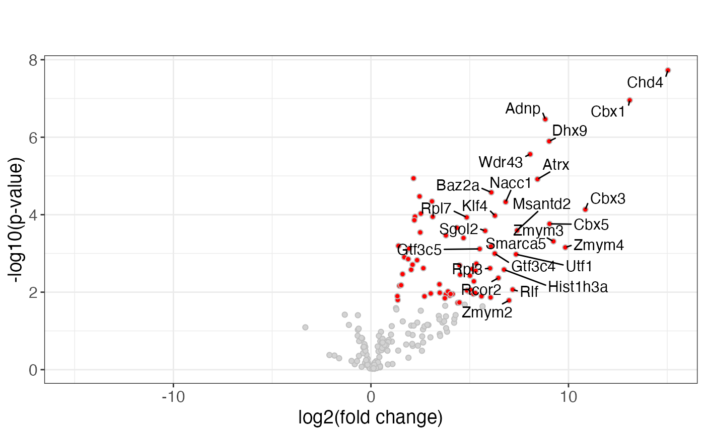
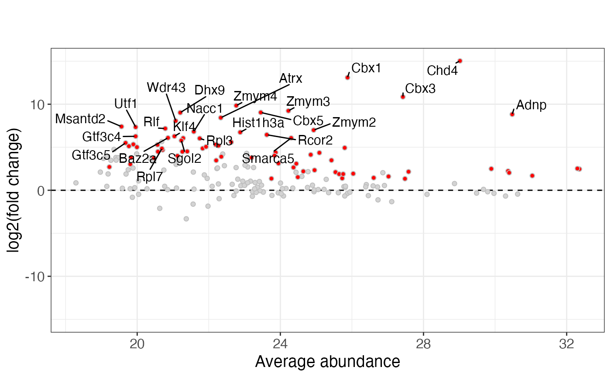
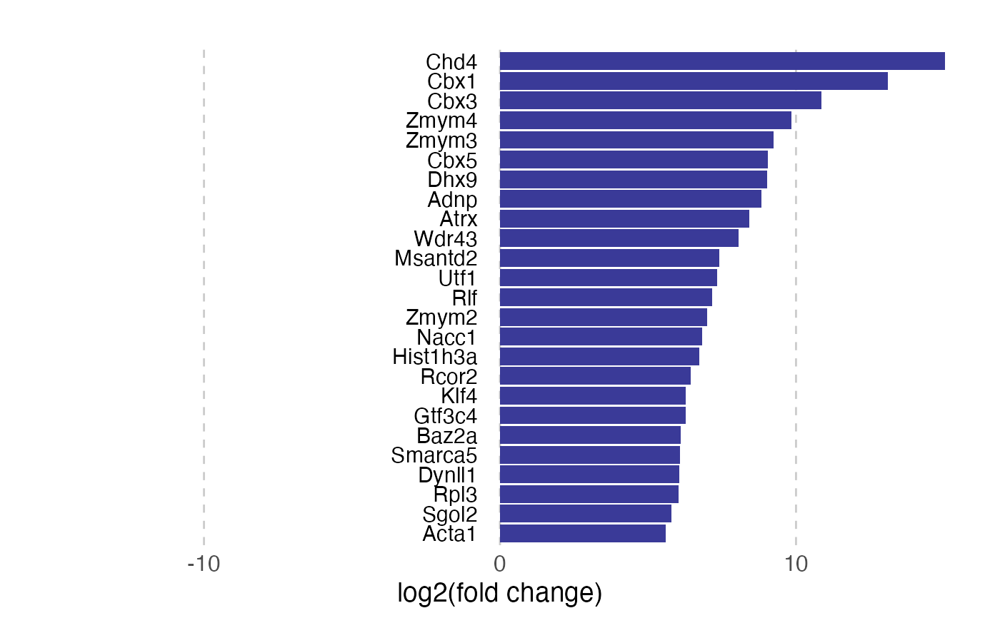

plotVolcano.RdConstruct interactive and non-interactive volcano plots, MA plots, STRING networks of up- and downregulated proteins, bar plots of average abundances and log-fold changes, as well as plots of top-ranked feature collections.
plotVolcano(
sce,
res,
testType,
xv = NULL,
yv = NULL,
xvma = NULL,
volcind = NULL,
plotnote = "",
plottitle = "",
plotsubtitle = "",
volcanoFeaturesToLabel = c(""),
volcanoMaxFeatures = 25,
volcanoLabelSign = "both",
baseFileName = NULL,
comparisonString,
groupComposition = NULL,
stringDb = NULL,
featureCollections = list(),
complexFDRThr = 0.1,
maxNbrComplexesToPlot = 10,
curveparam = list(),
abundanceColPat = "",
xlab = "log2(fold change)",
ylab = "-log10(p-value)",
xlabma = "Average abundance",
labelOnlySignificant = TRUE,
interactiveDisplayColumns = NULL,
interactiveGroupColumn = NULL,
makeInteractiveVolcano = TRUE,
maxTextWidthBarplot = NULL
)A SummarizedExperiment object (or a derivative). Can be
NULL if no "complex bar plots" are made (i.e., if
featureCollections has no entry named "complexes", or if
baseFileName is NULL).
A data.frame object with test results (typically
generated by runTest).
Character scalar indicating the type of test that was run,
either "ttest", "limma" or "proDA".
Character scalars indicating which columns of res that
should be used as the x- and y-axis of the volcano plot, respectively.
If NULL, will be determined based on testType.
If not NULL, a character scalar indicating which
column of res should be used as the x-axis for an MA plot. The
y-axis column will be xv. If NULL, no MA plot is
generated.
Character scalar indicating which column in res that
represents the "significance" column. This should be a logical
column; rows with a value equal to TRUE will be colored
in the plot. If NULL, will be determined based on testType.
Character scalar with a note to add to the plot.
Character scalar giving the title of the plot.
Character scalar giving the subtitle of the plot.
Character vector, features to label in the plot.
Numeric scalar, the maximum number of features to color in the plot.
Character scalar, either "both", "pos",
or "neg", indicating whether to label the most significant
features regardless of sign, or only those with positive/negative
log-fold changes.
Character scalar or NULL, the base file name of
the output files. If NULL, no result files are generated.
Character scalar giving the name of the comparison of interest. This is used to extract the appropriate column from the metadata of the feature collections to make the gene set plots.
A list providing the composition of each group
used in the comparisons indicated by comparisonString.
If NULL, assumes that each group used in comparisonString
consists of a single group in the group column of
colData(sce).
A STRINGdb object or NULL. If not NULL,
STRING network plots of up- and downregulated genes will be added to
the output pdf file.
A list of CharacterLists with feature
collections. If there is a collection named "complexes",
volcano plots and barplots for significant complexes are included in
the output pdf files.
Numeric scalar giving the FDR threshold for complexes to be considered significant.
Numeric scalar, the largest number of significant complexes to generate separate volcano plots for.
List with curve parameters for creating the Perseus-like significance curves in the volcano plots.
Character vector providing the column patterns used to identify abundance columns in the result table, to make bar plots for significant complexes. Typically the name of an assay.
Character scalars giving the x- and y-axis labels to use for the volcano plots, and the x-axis label to use for the MA plot.
Logical scalar, whether to label only
significant features (where volcind is TRUE), or to
select the top volcanoMaxFeatures regardless of significance
status.
Character vector (or NULL)
indicating which columns of res to include in the tooltip for the
interactive volcano plots. The default shows the feature ID.
Character scalar (or NULL, default)
indicating the column to group points by in the interactive volcano
plot. Hovering over a point will highlight all other points with the
same value of this column.
Logical scalar, indicating whether to construct an interactive volcano plot in addition to the static one.
Numeric scalar giving the maximum allowed width
for text labels in the bar plot of log-fold changes. If not NULL,
the size of the labels will be scaled down in an attempt to keep the
labels inside the canvas. Typically set to half the width of the
plot device (in inches).
A list with plot objects.
If baseFileName is not NULL, pdf files with volcano
plots and bar plots for significant complexes will also be generated.
sce <- readRDS(system.file("extdata", "mq_example", "1356_sce.rds",
package = "einprot"))
tres <- runTest(sce, comparisons = list(c("RBC_ctrl", "Adnp")),
testType = "limma", assayForTests = "log2_LFQ.intensity",
assayImputation = "imputed_LFQ.intensity")
pv <- plotVolcano(sce, tres$tests$Adnp_vs_RBC_ctrl, testType = "limma",
comparisonString = "Adnp_vs_RBC_ctrl")
#> Warning: Removed 39 rows containing missing values or values outside the scale range
#> (`geom_interactive_point()`).
pv$gg
#> Warning: Removed 39 rows containing missing values or values outside the scale range
#> (`geom_point()`).

pv$ggma
#> Warning: Removed 39 rows containing missing values or values outside the scale range
#> (`geom_point()`).

pv$ggwf
